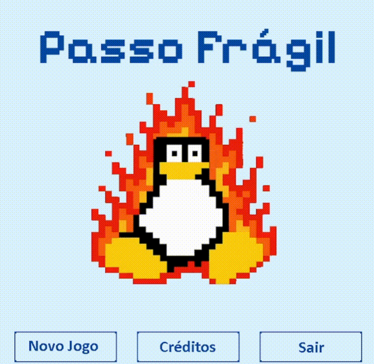

Detalhes do Projeto

Visão Geral
Desenvolvido como projeto prático para a disciplina de Programação Orientada a Objetos (POO), este jogo é um quebra-cabeça (puzzle) baseado em tiles inspirado no nostálgico minigame "Gelo Fino" do Club Penguin. A premissa mecânica é simples, mas desafiadora: o jogador controla um pinguim que deve traçar uma rota até a saída, mas cada bloco de gelo pisado derrete imediatamente, impedindo qualquer retrocesso e exigindo planejamento estratégico.
Construído inteiramente do zero utilizando Java, o projeto serviu como um laboratório excelente para aplicar os pilares da Orientação a Objetos no desenvolvimento de sistemas interativos. Para aprofundar o level design, expandi o conceito original introduzindo diferentes mecânicas de itens coletáveis, que aplicam efeitos especiais e adicionam novas camadas de complexidade à resolução das fases. Os recursos visuais foram construídos mesclando pixel art original de minha autoria com adaptações de referências clássicas, garantindo o carisma e a legibilidade visual do puzzle.
Principais Aspectos Técnicos
Programação Orientada a Objetos
Desenvolvimento 100% em Java, aplicando na prática conceitos de Herança, Polimorfismo e Encapsulamento para estruturar as entidades do jogo (jogador, pisos e itens) de forma modular e limpa.
Lógica de Grid e Puzzle
Implementação de um sistema matemático de movimentação baseada em tiles (matriz), lidando com a atualização dinâmica dos estados do chão (derretimento) e verificação de condições de vitória/derrota.
Sistema de Modificadores
Criação de uma arquitetura expansível para itens coletáveis, permitindo que a coleta de objetos pelo mapa ative efeitos especiais que alteram as regras do puzzle em tempo real.
Renderização e Arte 2D
Construção do motor de renderização visual no próprio Java, mesclando assets originais criados por mim com adaptações de recursos da internet para dar vida à interface e aos personagens.